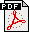

| newty.de | About | Download | Links | Disclaimer | Index | Contact |
| 4.1 What are Functors ? |
| 4.2 How to Implement Functors ? |
| 4.3 Example of How to Use Functors |
Functors are functions with a state. In C++ you can realize them as a class with one or more private members to store the state and with an overloaded operator () to execute the function. Functors can encapsulate C and C++ function pointers employing the concepts templates and polymorphism. You can build up a list of pointers to member functions of arbitrary classes and call them all through the same interface without bothering about their class or the need of a pointer to an instance. All the functions just have got to have the same return-type and calling parameters. Sometimes functors are also known as closures. You can also use functors to implement callbacks.
First you need a base class TFunctor which provides a virtual function named Call or a virtually overloaded operator () with which you will be able to call the member function. It's up to you if you prefer the overloaded operator or a function like Call. From the base class you derive a template class TSpecificFunctor which is initialized with a pointer to an object and a pointer to a member function in its constructor. The derived class overrides the function Call and/or the operator () of the base class: In the overridden version you call the member function using the stored pointers to the object and to the member function. If you are not sure of how to use function pointers take a look at my Introduction to Function Pointers.
//-----------------------------------------------------------------------------------------
// 4.2 How to Implement Functors
// abstract base class
class TFunctor
{
public:
// two possible functions to call member function. virtual cause derived
// classes will use a pointer to an object and a pointer to a member function
// to make the function call
virtual void operator()(const char* string)=0; // call using operator
virtual void Call(const char* string)=0; // call using function
};
// derived template class
template <class TClass> class TSpecificFunctor : public TFunctor
{
private:
void (TClass::*fpt)(const char*); // pointer to member function
TClass* pt2Object; // pointer to object
public:
// constructor - takes pointer to an object and pointer to a member and stores
// them in two private variables
TSpecificFunctor(TClass* _pt2Object, void(TClass::*_fpt)(const char*))
{ pt2Object = _pt2Object; fpt=_fpt; };
// override operator "()"
virtual void operator()(const char* string)
{ (*pt2Object.*fpt)(string);}; // execute member function
// override function "Call"
virtual void Call(const char* string)
{ (*pt2Object.*fpt)(string);}; // execute member function
};
In the following example we have two dummy classes which provide a function called Display which returns nothing (void) and needs a string (const char*) to be passed. We create an array with two pointers to TFunctor and initialize the array entries with two pointers to TSpecificFunctor which encapsulate the pointer to an object and the pointer to a member of TClassA respectively TClassB. Then we use the functor-array to call the respective member functions. No pointer to an object is needed to make the function calls and you do not have to bother about the classes anymore!
//-----------------------------------------------------------------------------------------
// 4.3 Example of How to Use Functors
// dummy class A
class TClassA{
public:
TClassA(){};
void Display(const char* text) { cout << text << endl; };
/* more of TClassA */
};
// dummy class B
class TClassB{
public:
TClassB(){};
void Display(const char* text) { cout << text << endl; };
/* more of TClassB */
};
// main program
int main(int /*argc*/, char* /*argv[]*/)
{
// 1. instantiate objects of TClassA and TClassB
TClassA objA;
TClassB objB;
// 2. instantiate TSpecificFunctor objects ...
// a ) functor which encapsulates pointer to object and to member of TClassA
TSpecificFunctor<TClassA> specFuncA(&objA, &TClassA::Display);
// b) functor which encapsulates pointer to object and to member of TClassB
TSpecificFunctor<TClassB> specFuncB(&objB, &TClassB::Display);
// 3. make array with pointers to TFunctor, the base class, and initialize it
TFunctor* vTable[] = { &specFuncA, &specFuncB };
// 4. use array to call member functions without the need of an object
vTable[0]->Call("TClassA::Display called!"); // via function "Call"
(*vTable[1]) ("TClassB::Display called!"); // via operator "()"
// hit enter to terminate
cout << endl << "Hit Enter to terminate!" << endl;
cin.get();
return 0;
}
|  | You can download a Postscript or a PDF of the tutorials about Function Pointers, Callbacks and Functors! | ||
| Vous pouvez télécharger une version Postscript ou PDF de ce turoriel sur les pointeurs de fonctions, les fonction de rappel et les functors! | |||
| You can also download the zipped source-files with all examples of the tutorials! | |||
| Guestbook & Newsgroup about function pointers! |
last updated: 06 January 2005 © 2000-2005 by Lars Haendel
The source code presented was highlighted using my free Source to HTML Converter tool.